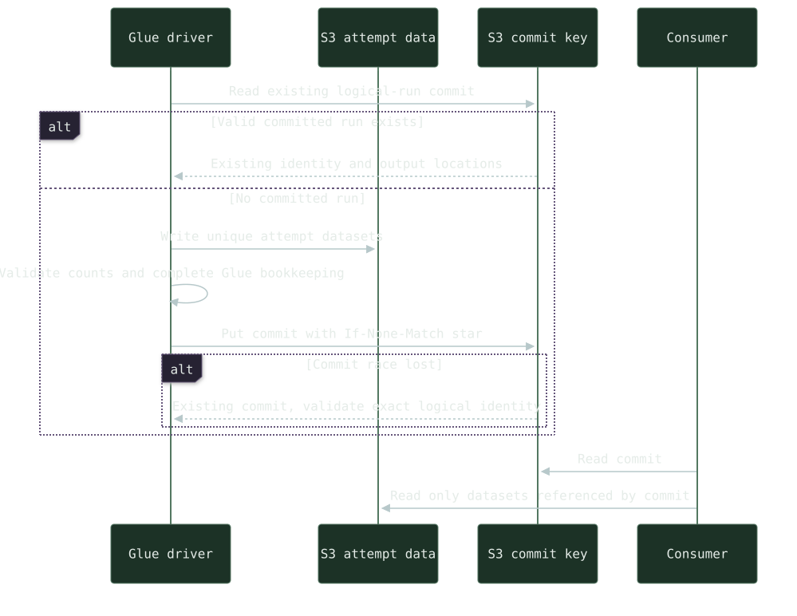

Review before automation
No production threshold or accuracy is established. Insufficient evidence stays null; ties, singleton rules and acceptance margins need domain approval.
A proposed AWS Glue pipeline for matching incoming records against a reference dataset when values are similar rather than identical. Spark handles distributed reads, candidate joins and ranking; RapidFuzz scores retained pairs in bounded batches. The design starts with reviewable suggestions, with automatic acceptance dependent on labeled examples and an agreed matching policy.
The work covers the matching algorithm and its operating boundaries: immutable S3 snapshots, versioned normalization, candidate-volume limits, explainable decisions and isolated output attempts. Terraform and a protected GitHub OIDC release flow would deploy pinned artifacts through separate AWS roles. A conditional final manifest tells consumers which completed datasets they can read.
DESIGN / PROVISIONAL · R1 The solution has been reviewed as documentation. Implementation, managed Glue executor tests, AWS deployment, throughput and matching-quality validation remain outstanding. Matching mode, domain rules, sample data and environment constraints still need confirmation.
The architecture diagram from the R1 solution design connects release artifacts, snapshots, the Glue job, publication and operational signals.

Check completed snapshots, schemas and stable IDs. Apply the same versioned normalization to both datasets; blank fields stay missing evidence.
Join on approved blocking keys, preserve rule provenance and deduplicate pairs. Check block, record and global budgets before expensive joins.
Score corresponding pairs with RapidFuzz in bounded batches. Combine comparable evidence and rank across every block, preserving the runner-up and ambiguity.
Produce decisions, top-k candidates and quarantine reasons. Reconcile every valid source ID, validate attempt outputs, then conditionally create the commit manifest.
A verified existing commit can be reused. New attempts write isolated data first; a race loser validates the winning commit instead of overwriting it.

No production threshold or accuracy is established. Insufficient evidence stays null; ties, singleton rules and acceptance margins need domain approval.
Consumers follow exact manifest paths. Conditional publication controls the visible result; it does not make multi-object writes atomic or execution exactly once.
Native wheels, executor imports, IAM boundaries, notification delivery and candidate recall require targeted tests before operational readiness.